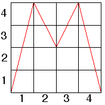
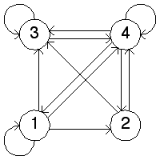
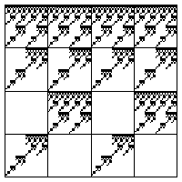
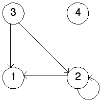
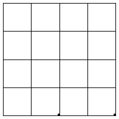

| 12. (a) On the right is the transition graph for the function on the left. |
| From the graph we see the forbidden transitions are |
|   |
| (b) Here is the fractal generated by this transition graph. |
|  |
| (c) The complementary transition graph is on the left, the attractor of the driven IFS is on the right. |
|   |
| Why does it look that way? The loop |
| (d) The only obvious conclusion is that the IFS of a transition graph and its complement have complementary address length 2 squares occupied. That is, the empty squares of one are occupied squares of the other, and vice versa. |
Return to Homework 8 Practice.